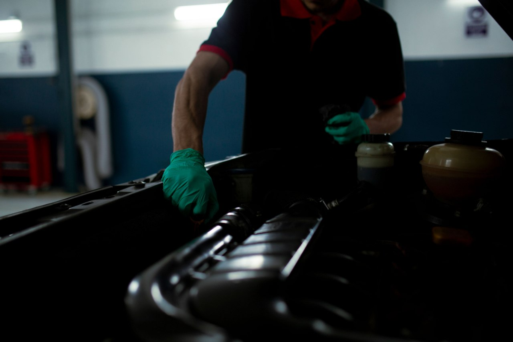

Home / Oil and fluids
Oil Filter: How Often to Change It and How to Choose One
Quick answer
Change the oil filter every time you change the oil. Use a quality filter matched to your exact engine, replace the seals and O-rings on cartridge types, make sure the old rubber seal didn't stay on the engine and don't over-tighten. Check for leaks after the first run.

Fresh oil poured through a dirty filter doesn't do much good. The filter catches the grit and metal particles that build up in your engine, so it should be changed whenever the oil is.
How often to change it
For nearly every car, the answer is every oil change. Your service schedule gives the interval, commonly somewhere between 5,000 and 10,000 miles (8,000 to 16,000 km) or once a year, depending on the engine and the oil. If most of your driving is short trips or stop-start traffic, lean toward the shorter end.
Two types of filter
Spin-on filter
A metal canister that screws onto the engine. This is the most common type on everyday cars. The whole canister is replaced.
Cartridge (element) filter
A paper element that sits inside a plastic or metal housing, which stays on the engine. Many modern cars use this type, including many BMWs. You replace the element and the rubber seals.
Choosing the right filter
- Match your exact engine. Filters that look alike can differ in thread, size and valve settings.
- Buy a known brand or genuine part. The valves inside matter, and the cheapest no-name filters aren't worth the saving.
- Replace seals and O-rings that come with cartridge filters. Never reuse them.
The filter is only part of the job. How to Change Engine Oil at Home covers draining, refilling and the checks afterwards.
Changing a spin-on filter
- Warm the engine briefly, then switch off. Warm oil drains better, but don't work on a hot engine.
- Raise the car safely on jack stands and drain the old oil.
- Place a drain pan under the filter and unscrew it with a filter wrench. Expect some oil to spill.
- Make sure the old rubber seal came off with the filter and isn't stuck to the engine. A second seal on top of the first causes leaks.
- Wipe the mounting surface clean and rub a thin film of fresh oil on the new filter's seal.
- Screw the new filter on by hand until the seal touches, then tighten as the filter's instructions say, usually about three-quarters of a turn.
- Refill with the correct oil, run the engine and check for leaks.
Changing a cartridge filter
- Drain the oil first, then unscrew the housing cap with the correct socket.
- Remove the old element and clean the housing.
- Fit the new element and fresh seals, with a little oil on the seals.
- Tighten the cap to the torque in your manual. Over-tightening can crack plastic housings.
Tip. After refilling, run the engine for a minute, switch off and check under the car for drips. Then re-check the oil level on the dipstick or menu.
If you notice a smell after the job, read Burning Smell After an Oil Change. For timing, see How Often Should You Change Your Engine Oil?, and for the right oil grade Engine Oil Viscosity Explained.
Common mistakes
- Over-tightening with a wrench
- Leaving the old seal stuck on the engine
- Reusing old O-rings
- Skipping the leak check
Disposing of old oil
Don't pour it down a drain or into the ground. Most recycling centres and many parts shops accept used oil and old filters.
FAQ
Should I change the oil filter at every oil change?
Yes, for nearly every car. A fresh filter keeps the new oil clean.
Can I reuse an oil filter?
No. Spin-on filters are replaced whole, and cartridge elements come with fresh seals.
How tight should an oil filter be?
Hand-tight plus the extra turn given in the filter's instructions. Cartridge caps use the torque in your manual. Never over-tighten.
What if the new filter leaks?
Check for a doubled seal, a dirty seat or a loose cap. Don't keep driving with a leak.
This guide is general information, not professional advice. Check your own vehicle's manual for exact specs and read the disclaimer before starting any job.